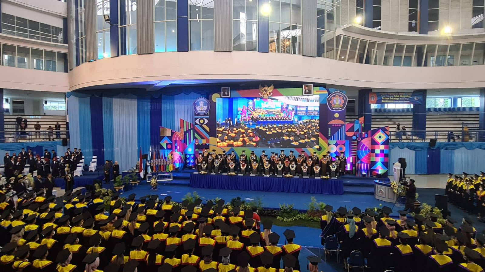
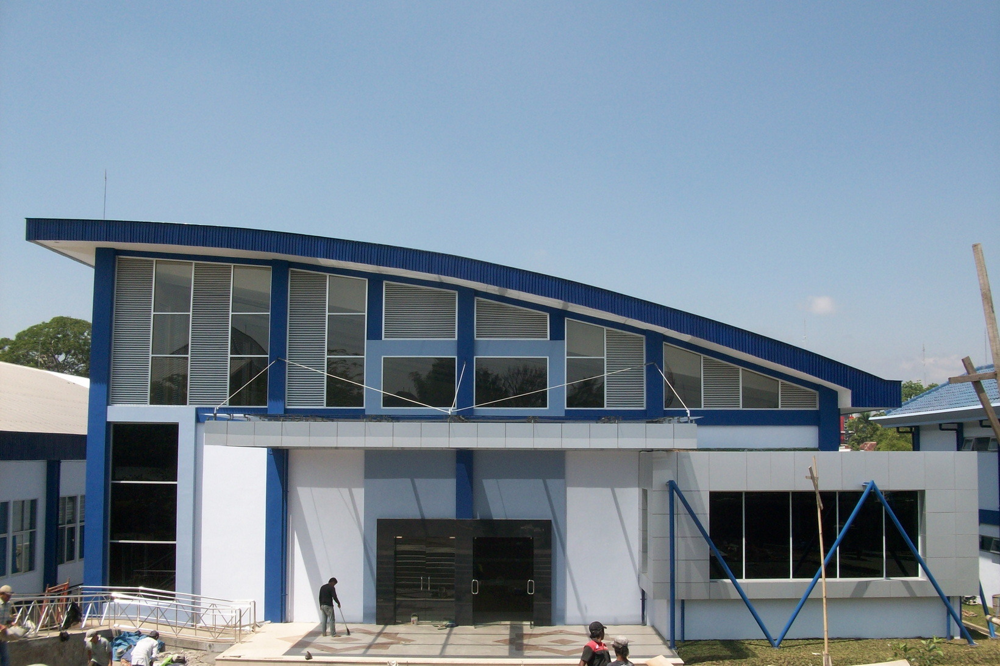

Polinema Creative Center

The Polinema Creative Center (PCC) is an initiative by the State Polytechnic of Malang to support creative individuals in the city of Malang by providing spaces and facilities that can be booked. Our mission is to foster innovation and collaboration by offering state-of-the-art venues for events, workshops, and creative projects.
Our Facilities
Graha Polinema

A grand hall perfect for large-scale events, seminars, and exhibitions, equipped with modern audio-visual systems.
Aula Pertamina

A versatile auditorium suitable for conferences, presentations, and cultural performances, offering comfortable seating and excellent acoustics.
Auditorium Lantai 8 Teknik Sipil

A modern auditorium with panoramic views, ideal for academic lectures, workshops, and smaller events requiring a sophisticated setting.
Graha Theater

A dedicated theater space designed for performances, film screenings, and artistic showcases, featuring professional lighting and sound.
Ruang Musik Jurusan Teknologi Informasi
A dedicated music room within the Information Technology department, perfect for rehearsals, small performances, and sound production.
Ruang LSI 1, 2, dan 3 Jurusan Teknologi Informasi
Three versatile LSI rooms in the IT department, suitable for collaborative projects, small meetings, and specialized technical workshops.
Ready to Book Your Space?
Unlock the potential of your next event or creative project. Click the button below to reserve your desired facility.
Book Now